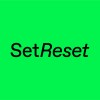

{{>header}}

<script sb:buildtime type="application/json">
  {
    "name": "Anthony Cossins",

    "role": "Senior Frontend Engineer",

    "bio": "Hello! I specialise in implementing user-facing features for web applications and interactive experiences. What I've built has been relied upon by millions.",
    
    "links": [
      { "label": "anthonycossins.com", "url": "https://anthonycossins.com" },
      { "label": "anthony.cossins@gmail.com", "url": "mailto:anthony.cossins@gmail.com" }
    ],

    "skills": [
      "TypeScript",
      "JavaScript",
      "CSS",
      "Node.js",
      "AWS",
      "CI/CD"
    ],

    "tools": [
      "React",
      "Svelte",
      "Redux",
      "Docker",
      "Git",
      "Figma",
      "Godot Engine"
    ],

    "experience": [
      {
        "title": "Freelance",
        "role": "Senior Frontend Engineer",
        "logo": "/assets/images/freelance_logo.png",
        "from": "December 2024",
        "to": "Present",
        "highlights": [
          "Worked with Set Reset to deliver a reliable and high fidelity 3D interactive installation for S&P Global. Lead the development of the asset pipeline that automated the processing of larges amounts of 3D content.",
          "Worked on various frontend projects creating polished and dynamic interfaces for games and web applications."
        ]
      },
      {
        "title": "Framer",
        "role": "Product Engineer",
        "logo": "/assets/images/framer_logo.jpeg",
        "from": "June 2022",
        "to": "December 2024",
        "highlights": [
          "Designed and developed the font previews feature, from initial hackathon concept to fullstack production ready feature.",
          "Led the engineering work to integrate Fontshare typefaces. Managed communication and coordination with the external development team.",
          "Played a key role in launching the Plugins platform, designing and implementing core APIs and owning the authentication model.",
          "Shipped multiple high quality product features relied upon daily by thousands of users to run their businesses.",
          "Shipped multiple high quality product features relied upon daily by thousands of users to run their businesses."
        ]
      },
      {
        "title": "BBC iPlayer",
        "role": "Senior Software Engineer",
        "logo": "/assets/images/bbc_logo.jpeg",
        "from": "June 2018",
        "to": "June 2022",
        "highlights": [
          "Led development and technical direction for the content item redesign and “hover card” interaction on the iPlayer homepage.",
          "Mentored graduate and junior software engineers and initiated knowledge sharing sessions for the team.",
          "Maintained Jenkins CI/CD pipelines and AWS infrastructure.",
          "Collaborated with team members to create high quality code following TDD and pair programming best practices.",
          "Shipped performant and accessible web applications used by millions of people per week using React, Redux and CSS."
        ]
      },
      {
        "title": "Signal Noise",
        "role": "Frontend Developer",
        "logo": "/assets/images/signal_noise_logo.jpeg",
        "from": "June 2013",
        "to": "October 2017",
        "highlights": [
          "Worked closely with designers to create single page web applications for clients including The Guardian, eBay and Alzheimer's Society.",
          "Developed, maintained and shipped real-time data visualisations for UBS global conferences and exhibitions run by The Economist.",
          "Created internal tools, such as Bigscreen for displaying web content in “kiosk mode” and FindBot which made the company server searchable.",
          "Animated interactive visualisations using Canvas and SVG."
        ]
      }
    ]
  }
</script>

<link rel="stylesheet" href="./assets/css/reset.css">
<link rel="stylesheet" href="./assets/css/vars.css">
<link rel="stylesheet" href="./assets/css/body.css">
<link rel="stylesheet" href="./assets/css/button.css">

<style>
  nav {
    display: flex;
    justify-content: center;
    gap: 20px;
    padding: 50px 0;
  }
</style>

<style>
  .cv {
    --outer-padding: 30px;
    --inner-padding-horizontal: 40px;
    --inner-vertical-padding: 40px;
    --info-column-width: 35%;

    background: white;
    border: 1px solid rgba(0, 0, 0, 0.35);
    box-shadow: 
      0px 0px 3px 0px rgba(0, 0, 0, 0.25), 
      0 0 0 calc(var(--outer-padding) - 1px) white inset,
      0 0 0 var(--outer-padding) black inset;
    border-radius: 24px;
    color: var(--text-color);
    font-family: 'Helvetica Neue', Arial, sans-serif;
    padding: var(--outer-padding);
    
    display: flex;
    flex-direction: column;
    
    width: 1024px;
    aspect-ratio: 210 / 297;
    overflow: hidden;
    
    margin: 0 auto;
  }

  @media screen {
    @media (max-width: 1024px) {
      .cv {
        zoom: 0.8;
      }
    }

    @media (max-width: 860px) {
      .cv {
        zoom: 0.5;
      }
    }

    @media (max-width: 560px) {
      .cv {
        zoom: 0.3;
      }
    }
  }

  @media print {
    body {
      background: none;
    }

    nav {
      display: none;
    }

    .cv {
      box-shadow:
        0 0 0 calc(var(--outer-padding) - 1px) white inset,
        0 0 0 var(--outer-padding) black inset;
      border: none;
      border-radius: 0;
      margin: 0;
    }
  }

  .cv * {
    font-size: 1rem;
    margin: 0;
    padding: 0;
  }

  .cv a {
    color: var(--link-color);
    text-decoration: underline;
  }

  .cv ul {
    list-style: none;
  }

  .cv ul,
  .cv p {
    line-height: 1.4;
  }

  .cv__profile {
    display: flex;
    padding: var(--inner-vertical-padding) var(--inner-padding-horizontal);
  }

  .cv__profile h1 {
    font-size: 1.6em;
    margin-top: 0.15rem;
  }

  .cv__profile h2 {
    font-size: 1.6em;
    font-weight: 500;
    /* margin-bottom: 10px; */
  }

  .cv__profile p {
    margin-bottom: 4px;
  }

  .cv__profile-logo {
    width: var(--info-column-width);
    flex-shrink: 0;
  }

  .cv__profile-info {
    display: flex;
    flex-direction: column;
    gap: 15px;
  }

  .cv__profile-info ul {
    display: flex;
    gap: 20px;
    margin-top: auto;
  }

  .cv__section {
    display: flex;
    flex-direction: column;
    gap: var(--inner-padding-horizontal);
    border-top: 1px solid black;
    padding: var(--inner-vertical-padding) var(--inner-padding-horizontal);
    position: relative;
  }

  .cv__section--small {
    gap: 15px;
  }

  .cv__section:last-child {
    /* margin-top: auto; */
  }

  .cv__section-title {
    background-color: white;
    display: inline-block;
    position: absolute;
    font-size: 0.8rem;
    top: 0;
    transform: translateY(-50%);
  }

  .cv__section-title::before,
  .cv__section-title::after {
    --title-gap-width: 20px;

    content: "";
    background: white;
    position: absolute;
    top: 0;
    width: var(--title-gap-width);
    height: 100%;
  }

  .cv__section-title::before {
    left: calc(0px - var(--title-gap-width));
  }

  .cv__section-title::after {
    right: calc(0px - var(--title-gap-width));
  }

  .cv__employment {
    display: flex;
  }

  .cv__employment h4 {
    font-weight: 500;
  }

  .cv__employment h5 {
    display: flex;
    gap: 10px;
    font-weight: 500;
  }

  .cv__employment h5 time {
    opacity: 0.5;
  }

  .cv__employment h5 span {
    opacity: 0.5;
  }

  .cv__employment aside {
    width: var(--info-column-width);
    flex-shrink: 0;
    display: flex;
    gap: 12px;
    line-height: 1.4;
  }

  .cv__employment aside div {
    display: flex;
    flex-direction: column;
  }

  .cv__employment aside div:first-child {
    padding-top: 5px;
  }

  .cv__employment aside div:first-child img {
    border: 1px solid rgba(0, 0, 0, 0.8);
    border-radius: 4px;
    width: 35px;
    height: 35px;
  }

  .cv__employment ul {
    display: flex;
    flex-direction: column;
    gap: 13px;
    flex-grow: 1;
  }

  .cv__employment ul li {
    display: flex;
    align-items: flex-start;
    gap: 12px;
  }

  .cv__employment ul li img {
    height: 0.7rem;
    margin-top: 5px;
    user-select: none;
  }

  ul.cv__skill-list {
    flex-direction: row;
    gap: 10px;
  }

  .cv__skill-list li {
    border: 1px solid rgba(0, 0, 0, 0.8);
    border-radius: 4px;
    padding: 2px 8px;
    font-size: 15px;
  }

</style>




<nav>
  <button id="download-pdf" class="button">Download as PDF</button>
  <button id="copy-markdown" class="button">Copy as Markdown</button>
</nav>

<main class="cv">
  <section class="cv__profile">
    <aside class="cv__profile-logo">
      {{>logo}}
    </aside>

    <aside class="cv__profile-info">
      <div>
        <h1>
          {{data.name}}
        </h1>
      
        <h2>
          {{data.role}}
        </h2>
      </div>
    
      <p>
        {{data.bio}}
      </p>

      <ul class="cv__skill-list">
        {{#data.skills}}
          <li>{{.}}</li>
        {{/data.skills}}
      </ul>

      <ul class="cv__skill-list">
        {{#data.tools}}
          <li>{{.}}</li>
        {{/data.tools}}
      </ul>

      <ul>
        {{#data.links}}
          <li><a href="{{url}}" target="_blank">{{label}}</a></li>
        {{/data.links}}
      </ul>
    </aside>
  </section>

  <section class="cv__section">
    <h2 class="cv__section-title">Employment</h2>

    {{#data.experience}}
      <article class="cv__employment">
        <aside>
          <div>
            
          </div>
          <div>
            <h3>{{title}}</h3>
            <h4>{{role}}</h4>
            <h5>
              <time>{{from}}</time> <span>—</span> <time>{{to}}</time>
            </h5>
          </div>
        </aside>

        <ul>
          {{#highlights}}
            <li>
              
              <p>{{.}}</p>
            </li>
          {{/highlights}}
        </ul>
      </article>
    {{/data.experience}}
  </section>
</main>


<script>
  const markdown = `
# {{data.name}} - {{data.role}}
{{data.bio}}

## Employment

{{#data.experience}}
### {{title}} - {{from}} to {{to}}
{{#highlights}}
- {{.}}
{{/highlights}}

{{/data.experience}}

## Experience

### Skills
{{#data.skills}}
- {{.}}
{{/data.skills}}

### Tools
{{#data.tools}}
- {{.}}
{{/data.tools}}

Thank you for your time!
  `.trim()

  const downloadPDFButton = document.querySelector("#download-pdf")
  const copyMarkdownButton = document.querySelector("#copy-markdown")

  downloadPDFButton.addEventListener("click", () => {

  })

  copyMarkdownButton.addEventListener("click", () => {
    const tempInput = document.createElement('textarea');
    tempInput.value = markdown;
    document.body.appendChild(tempInput);
    tempInput.select();
    tempInput.setSelectionRange(0, 99999);
    document.execCommand('copy');
    document.body.removeChild(tempInput);
  })
</script>

<nav></nav>

{{>footer}}
